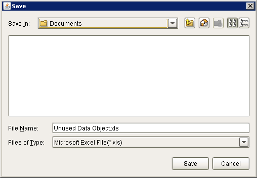
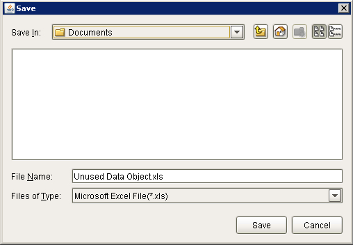
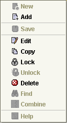
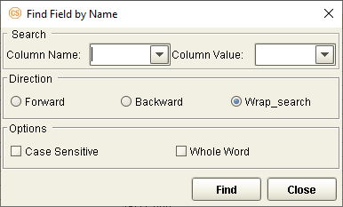
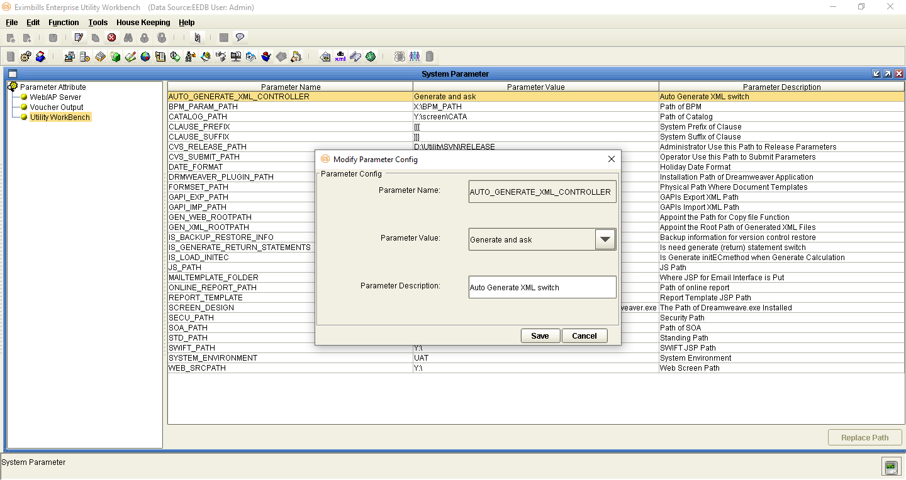
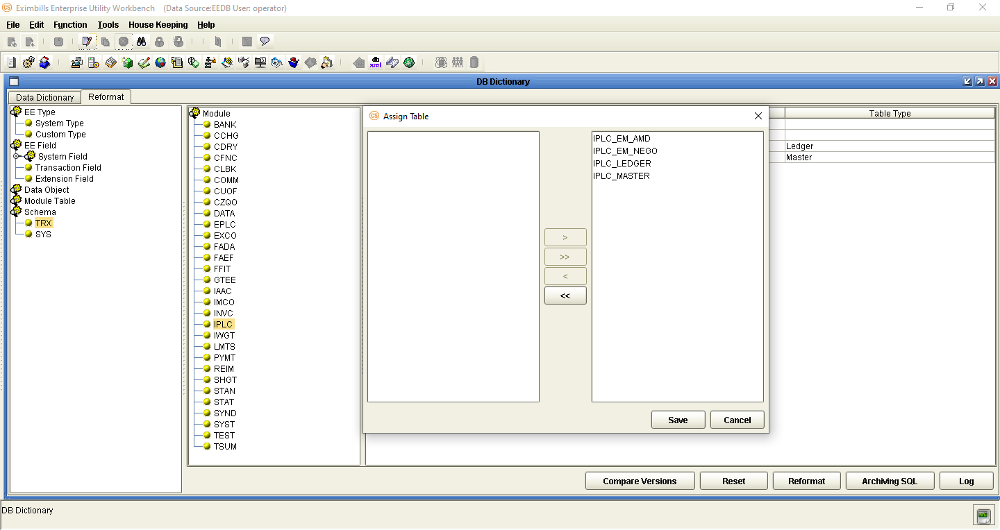
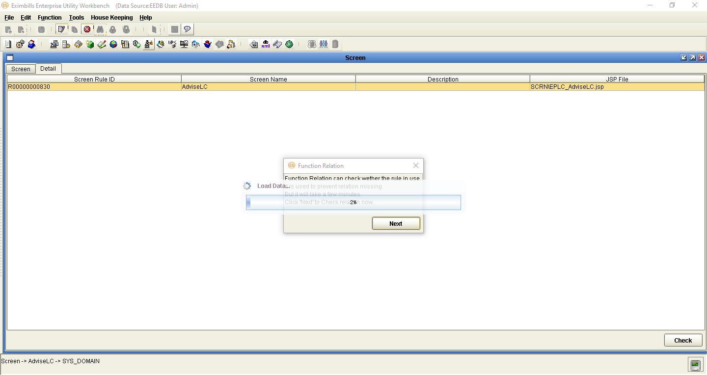
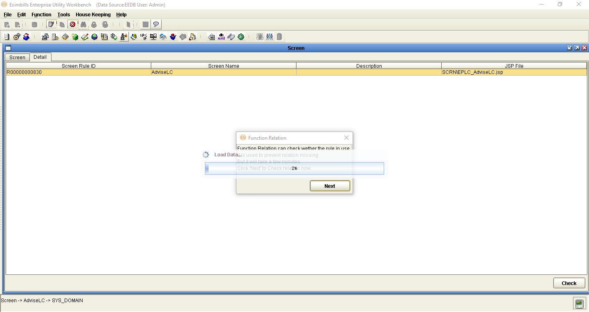
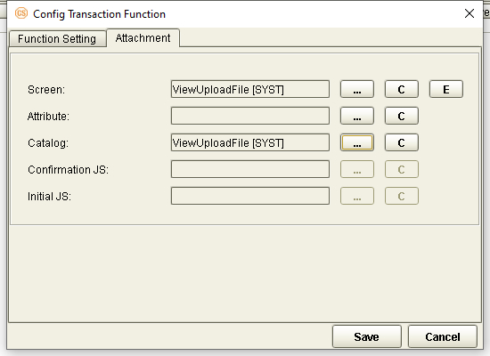

EEV415 Supplementary Functions Office2MD
| EXIMBILLS © Trade Finance SystemEximbills System Version 4.1.5Supplementary FunctionsFebruary 2021 |
|---|
| Copyright 202**1 © China Systems CorporationAll Rights ReservedThis document is protected by Copyright Law and may contain Trade Secrets Information which is proprietary to China Systems Corporation. No part of this document may be copied, photocopied, reproduced, translated, distributed, or reduced to any electronic medium or machine-readable form without prior consent in writing from China Systems Corporation. The information in this document may be used only under the terms and conditions of separate China Systems Corporation license agreements.Information is subject to change without notice. China Systems Corporation makes no warranties, either expressed or implied, with respect to the software herein described as to its quality, performance, including, without limitations to, its fitness for any particular purpose.This document may not reflect total system capability at any subsequent date as a result of development. It is also possible that it may contain references to facilities not available on your computer system. Such references should not be construed to mean that these facilities will necessarily be made available on all types of computer hardware or in all user locations.China Systems Corporation accepts no responsibility or liability for any damages or loss of business or revenue due to the use of this document.All trademarks, registered trademarks and trade names mentioned in this document are the sole property of their respective holders*.* |
| ORDER MORE EXIMBILLS DOCUMENTATIONAdditional copies of Documentation are available for purchase from China Systems Corporation or through your local EXIMBILLS Support Office. |
 CHINA SYSTEMS CORPORATIONComments may be addressed to:corporatedocs@chinasystems.comChina Systems Corporation Ltd.Corner House, 20 Parliament StreetHamilton HM12Bermuda CHINA SYSTEMS CORPORATIONComments may be addressed to:corporatedocs@chinasystems.comChina Systems Corporation Ltd.Corner House, 20 Parliament StreetHamilton HM12Bermuda |
Table of Contents
Preparing the EE Utility Files
Navigating the EE Utility Interface
Enabling the Compliance Check Functionality
RESTful Web Service Deployment
EE Documentation Library
EE Documentation Library
The EE Documentation Library lists all available manuals that serve as references on the use of the Eximbills Enterprise system. The documents are categorized into three groups: Core System Manuals, EE Utility References, and Installation Guides.
Core System Manuals
The EE Core System manuals provide information on the setup and configuration of various EE parameters, as well as the implementation of supplementary functionalities supported by the system.
Archiving and Recovery
This manual is a reference to the Archive and Recovery functionality of the EE system. Discussions include the required parameter settings for configuring the relevant functions, as well as examples of how this functionality is used in transaction processes. The archiving functions discussed in this manual are Archive Data, Inquire Archived Data, Restore Archived Data, Delete Archived Data, and End of Month functions.
BIRT Report Engine
This manual discusses the requirements and processes involved in applying the built-in BIRT report engine of EE to build transaction functions that generate BIRT reports and documents. Other functionalities, such as configuring a report batch function and defining rules to attach documents to an outgoing e-mail, are covered as well.
Building a Module
This manual is designed to help new users of EE plan, organize, control, and successfully carry out the implementation of the system. It provides a general description of the different features of EE that enable every bank to build and design business modules according to its processing requirements. This manual discusses how a custom business module in EE can be built and adapted. It includes step-by-step procedures on how to build a module as well as an overview of runtime transaction processing.
Charges and Commissions Reference
This document provides extensive discussions on the setup and usage of the Charges and Commissions component of EE. Instructions include setting up parameters, defining the relevant standing data, and using charge-specific calculation methods.
Data Objects
This manual describes in detail the steps and procedures required in building and utilizing a data object, which is a logical object that has its own attributes and calculation rules. Instructions on customizing the DO screen interface, navigating the data object screen, and using data objects in transaction processes are also provided.
eLOAN Transaction Module
This document provides extensive discussions on EE’s eLOAN sub-system. Topics include eLOAN functions from the eLOAN Transaction Module and the EE Standing Data Module.
FAQs
This document addresses commonly asked questions about the EE system. This includes answers to issues related to browser-side processing, EE Utility, EE database, Security Manager, and other issues that may arise while operating and configuring settings within the EE environment. Some system features and capabilities are discussed as well.
GAPI Integration
This manual is a comprehensive reference guide on setting up the required parameters for sending and receiving GAPI messages. It includes instructions on the configuration of related functionalities and auxiliary operations, as well as discussions on actual transaction processing.
Limit Management Module
This document provides extensive discussions on the Limits sub-system of EE. The manual is divided into two parts:
The first part discusses all the browser functions of the Limit Management module.
The second part discusses the required parameter settings to integrate Limits settings and data with a business module.
Limit Transaction Module
This document provides extensive discussions on running and using the functions of the Limit Transaction module.
Log Settings
This manual provides instructions on defining EE log settings and configuring parameters to set up log functions. Generating logs on different modes and checking the different log directories are discussed as well.
Multi-Entity Reference
This manual is a guide to the multi-entity structure of the EE system. This includes a discussion on the composition of the system in relation to this structure. EE also supports the use of a single and default domain; a supplementary section is provided for this.
Multi-Language Reference
This manual provides instructions on defining language records and configuring the multi-language settings in the EE Utility and EE browser. With this multi-language functionality, users are able to access the EE system in their preferred language.
Payment Component Reference
This document provides extensive discussions on the setup and usage of the different Payment component types: Payment Terms, Payment Schedule, Payment Instruction Dealer, and Payment Dealer. Topics include parameter settings and Payment-specific calculation methods.
Security Manager
This manual is a comprehensive guide to security management in the EE system. As such, it includes instructions on the setup of user profiles, user functions, business units, business unit functions, user and business unit assignments, and other security-related operations.
Service Level Agreement Reference
This document is a reference to the Service Level Agreement (SLA) functionality of EE the system, which pertains to a group of settings that control the flow of transaction steps and processes. It is divided into two major sections: Basic Data, for the functions used in the creation and maintenance of SLA standing data; and System Operations, for the functions used in SLA enquiry, business task initialization, and end time adjustments. A sample process is also provided.
Standing Data Module
This document discusses the functions for the standing data of the EE system. Among these are rate descriptions, exchange rates, interest rates, account numbers, currencies, weekend data, holiday data, clauses, reference number rules, authorization standing data, and time zone data. Descriptions, input details, and processing steps are included in the function discussions.
Supplementary Functions
This manual is a reference in configuring the parameter settings to define special or supplementary EE functionalities such as the Compliance Check and invoice uploading features.
SWIFT Configuration
This document provides extensive discussions on the primary components required in defining SWIFT messages: the SWIFT template and the SWIFT message rule. The complete parameter settings and external configurations required for enabling EE to exchange messages with the SWIFT network are detailed in comprehensive procedures. This manual is supplemented with sections on SWIFT-related system parameters and miscellaneous functions.
System Administration Functions
This manual is a reference for Super Administrator users of the EE Utility in the configuration and maintenance of the EE environment. Sections of this reference include instructions on the use of specific User Manage and Parameter Manage functions.
System Maintenance Module
This document discusses the functions provided in the System Maintenance module of the EE system. This includes sections on the maintenance processes for daily operations, authorization rule settings, EDI messages, SWIFT messages, XML messages, log files, and documents.
System Reference
This manual is a reference for the following elements provided in the EE Utility for parameterization: security parameters, system parameters, components, server side system methods, calculation methods, and XML Generator items.
Version Control
This manual discusses the settings in maintaining the different versions of parameters.
EE Utility References
The EE Utility set of reference manuals is a guide on the use of the Eximbills Enterprise Utility Workbench, or simply EE Utility. These references discuss every function or feature of the EE Utility and provide instructions on how to operate or use the function in relation to operating and maintaining the EE system and processing a business transaction.
A manual is provided for each major function group of the EE Utility: User Manage, Parameter Manage, System Function, Transaction Function, and Maintenance.
 NOTE: The TSU Parameter Manage function group is comprised of functions used for configuring, managing and maintaining parameters for the TSU (or Open Account) module. For information on the TSU module, refer to the EE Baseline TSU **documentation.**
NOTE: The TSU Parameter Manage function group is comprised of functions used for configuring, managing and maintaining parameters for the TSU (or Open Account) module. For information on the TSU module, refer to the EE Baseline TSU **documentation.**
EE Utility Reference: User Manager Functions
This manual is a comprehensive guide for the Administrator and Operator user on the use and configuration of the functions belonging to the User Manage function group of the EE Utility. This includes functions for user profiles and audit logs.
EE Utility Reference: Parameter Manager Functions
This manual is a reference on the use and configuration of the functions that belong to the Parameter Manage function group of the EE Utility and that are accessible to Administrator and Operator users. These are system-wide functions used for creating and maintaining system parameters, components, and calculation rules, among others.
EE Utility Reference: System Functions
This manual includes information on the configuration of the functions belonging to the System Function group of the EE Utility. The functions in this group are used to maintain settings that facilitate system-wide tasks and operations; among these are function groups, output devices, protocol managers, and STP settings.
EE Utility Reference: Transaction Functions
This manual provides discussions on the configuration of the functions belonging to the Transaction Function group of the EE Utility. These functions are used for defining and setting up the actual business parameters of transaction functions.
EE Utility Reference: Maintenance Functions
This manual is a comprehensive guide on the use and configuration of the functions belonging to the Maintenance function group of the EE Utility. These functions are used for maintaining the tables, fields, and files that are used in the EE Utility.
Installation Guide
An EE installation guide is a reference on the installation and setup processes of the EE system on a specific application server and database.
Installation Guide WAS 9.0 - Oracle 12c
This is a reference for installing the EE system on WebSphere Application Server Version 9.0.5.5, with an Oracle 12c database. This includes detailed instructions on configuring the components that are required to successfully run EE.
Introduction
manual overview
Manual Overview
Purpose
This manual is a reference in configuring the parameter settings to define special or supplementary EE functionalities such as the Compliance Check and invoice uploading features.
Audience
This manual is a reference specifically for, but not limited to, the following users:
Consultants tasked with building modules and other parameter work
Managers and supervisors responsible for ensuring that the resulting functionalities comply with the requirements of the bank
Prerequisites
This document is written with the assumption that the reader has sufficient knowledge of installing the EE system, running EE Utility functions, and building modules.
Suggested titles before reading this manual:
EE Installation Guide
EE Building a Module
EE Utility References
Using the EE Utility
Running the EE Utility
Generating the XML Parameter Files
Building an EE Module
Running the EE Utility
The Eximbills Enterprise Utility Workbench, or EE Utility, is the main tool for building parameters in EE.
Preparing the EE Utility Files
Along with the installation files, the EE Utility folder is provided with every EE system release.
Prior to using the EE Utility, do the following:
Copy the EE Utility folder to the local drive.
Edit the CSUtility.bat file in the EE Utility folder, define the \BIN path of the JDK program. **EXAMPLE:**path = C:\Program Files\Java\jdk1.8.0_181\bin
 **NOTE:**
**NOTE:**
i.For EE Version 2.5.0 and higher, the EE Utility supports JDBC thin. It is therefore not required to define the path of the Oracle database. For more information on JDBC Thin, refer to this discussion: EE Utility S.
ii.The Java Standard Edition Development Kit (JDK) program must already be installed on the EE machine prior to the configuration of EE Utility. For detailed information on installing EE, refer to the EE installation guides.
| EE Utility Supports JDBC ThinThe EE Utility supports JDBC thin. As such, it can connect to the Oracle database without adding information in the Net Manager. These are the advantages of using JDBC thin:The EE Utility may be used to connect to the Oracle database without installing an Oracle client.The EE Utility may be used to connect to the same database name on a different server.**EXAMPLE:**The EE Utility may connect to both EEDB EE400, and EEDB 192.168.0.246, which have similar database names but are on different servers. It is not required to delete one database from the Net Manager before being able to use the other database with the same name. |
|---|
Accessing the EE Utility
The main program for accessing the EE Utility program is the CSUtility.bat file. This file is located in the EE Utility folder.
| Do the following ... |
|---|
| 1. Run the CSUtility batch program to access the EE Utility.**NOTE:**i.A shortcut to the CSUtility batch file can be created on the desktop for easy access.ii.The EE Utility folder provides external tools that can be used for simulating or testing parameters and other parameter-related settings. These tools or functions are contained in the externalTools sub-folder. Refer to the EE FAQs manual for more information. | ||
|---|---|---|
| 2. The logon window of the EE Utility is displayed.To define the database information, click on the Profile button. | ||
| 3. In the Database Information dialog box that is displayed, specify the required database information and click on the Save button. | ||
| 4. A confirmation message is displayed. Click on the OK button. | ||
| **NOTE:** This new data source setting is saved in the UserInfo.xml file in the EE Utility directory. | ||
| 5. The relevant username and password may then be specified for logging on the EE Utility.The default usernames and passwords for the EE Utility users are as follows:Super AdministratorUser ID: super_adminPassword: baselinesAdministratorUser ID: Admin Password: 11111111Operator User ID: operatorPassword: 11111111**NOTE:** For information on defining EE Utility user profiles, refer to the EE System Administration Functions manual. |  |
|
| 6. The EE Utility window is displayed. | ||
| 7. A function is accessed by opening the relevant function group and clicking on the function name. **NOTE:**A user may only access and utilize the functions assigned to him. For more information, refer to the EE Utility Reference: User Manager Functions manual and the EE System Administration Functions documentation. |
Navigating the EE Utility Interface
When the EE Utility is accessed, the functions that may be used for setting up parameters are displayed. Additionally, shortcuts are provided for these.
The EE Utility interface also provides ways by which parameters can be created, edited, deleted, or linked to other operations: menu bar, toolbar buttons, and popup menu.
 |
|---|
Figure 2. 1 The EE Utility Interface
 **NOTE:**
**NOTE:**
i.A function is only displayed, and its corresponding button or menu option enabled, if the user has been given the right to access this function. Some options and functions are only available to Super Administrator users, while others are only accessible to Administrator and Operator users. For information on creating EE Utility users and assigning function access rights to users, refer to the EE System Administration Functions documentation.
ii.For information on EE Utility functions, refer to the EE Utility References.
EE Utility Functions
The parameter-setting functions in the EE Utility are organized together into several function groups. The available function groups and their corresponding functions are as follows.
User Manage Function Group
This function group consists of functions used for defining and modifying business unit settings, data source settings, and EE Utility user settings. These functions are:
Business Unit Config
Data Source Manage
User Manage
Audit Log
Parameter Manage Function Group
This function group is comprised of functions used for managing and maintaining system parameters, components, calculation rules, and language settings. These are used in EE, for both system and transaction processes. These functions are:
Component Manage
Calculation
Language Configuration
System Parameter
Security Parameters
Server
User Class
User Authority
System Function Group
This function group is comprised of functions used for facilitating system-wide tasks and operations such as domains, output devices, and STP settings. These functions are:
Function Group
Domain
Output Device
Protocol Manager
STP Setting
Say Total
TSU Parameter Manage Function Group
This function group is comprised of functions used for configuring, managing, and maintaining parameters (e.g., JS and STP settings) for the TSU module. These functions are:
TSU Server Setting
Thread JS Setting
Relation Mapping
TSU STP Setting
Transaction Function Group
This function group is comprised of functions used for defining the actual business parameters of transaction functions; these facilitate the maintenance and processes of the business transaction modules. These functions are:
Accounting Rules
Amount/ Rate Format
Archiving
Attribute
Batch Manage
Catalog
Clause
Event Driven
EDI Form
Export Setting
Form
GAPI Setting
Get CUBK
Get DO DATA
Message Broker Setting
Module & Event
Report Template
Screen
Server Side JS
Subtask
SWIFT
System Maintain
Message Mapping
Transfer To
Transaction Function
Maintenance Function Group
This function group is comprised of functions used for maintaining the tables, fields, and files that are used in the EE Utility. These functions are:
DB Dictionary
Multi Language
Field Conversion
XML Generator
Copy Module
Data Dictionary Mapping
Version Control Tool
Handwriting Editor
SOA Setting
SOA Calculation
Menu Bar
The options on the menu bar are shortcuts to both the common and specific functions and tasks of the system.
Figure 2. 2 Menu Bar
| Menu | Description |
|---|
| File | The available options from the File menu are:New: This is used for creating a new parameter or rule.Save: This is used for saving a created or modified setting.Close Function: This is used for closing the current function window.Log Off: This is used for logging off the system without exiting the EE Utility.Exit: This is used for closing the system window and exiting the EE Utility. | |
|---|---|---|
| Edit | The available options from the Edit menu are:Add: This is used for adding a setting for the selected function or parameter.Delete: This is used for deleting or removing an existing setting.Edit: This is used for editing or modifying an existing setting.Copy: This is used for copying or duplicating a selected setting. Lock: This is used for locking a parameter or setting to a specific user.Unlock: This is used for unlocking a locked parameter or setting. Find: This is used for finding a specific setting.**NOTE:**The Lock option is used to manually lock a parameter or setting to prevent another user from modifying it at the same time. A locked parameter may only be unlocked either manually (through the Unlock option) by the same user that locked the transaction, or automatically by the system, once the same user closes, cancels, or saves the parameter setting. Refer to the succeeding sections of this manual for more information on the process of locking and unlocking a parameter. | |
| Function | The available options from the Function menu are:User Manage, which displays options for running User Manager functions.Parameter Manage, which displays options for running Parameter Manager functions.System Function, which displays options for running System functions.TSU Parameter Manage, which displays options for running TSU Parameter Manager functions.Transaction Function, which displays options for running Transaction functions.Maintenance, which displays options for running Maintenance functions. | |
| Tools | The available options from the Tools menu are:Toolbar: When this option is selected, the basic toolbar is displayed on the EE Utility window.Function Toolbar: When this option is selected, the function toolbar is displayed on the EE Utility window.**NOTE:** The Set User Profile DB Info option is reserved for future use. | |
| House Keeping | The available option from the House Keeping menu is:Housekeeping: This option is used to check whether there are unused data objects (unused in transaction JSP files and DO relation settings) and fields (unused in transaction JSP files, transaction tables, and data objects) that are listed in the Data Dictionary.NOTE:Refer to the following Clearing Junk section. | |
| Help | The available option from the Help menu is:About Eximbill: When this option is selected, the About Eximbills Enterprise window is displayed. This window indicates the version information of EE.**NOTE:** The Help Topics - Content Help option is reserved for future use. |
|---|
Clearing Junk DataThe data created and utilized when setting parameters in the EE Utility are stored in the EE database, whether these are used or not. Fields and data objects, for instance, may be attached or added to module tables through the DB Dictionary function. Some of these fields and data objects are not used anymore, or are not used at all. These, however, still consume storage space in the database. To make sure the database is cleared of unnecessary or unused data, the House Keeping function in the EE Utility is provided.The House Keeping function, which is accessed through the menu bar, is basically used to check for unused fields and data objects and export the check result. Specifically, it checks if the following types of parameters including DO relation and function relation settings have been defined for fields and data objects:Accounting RulesAmount/Rate FormatCalculation - Common Data ObjectCalculation - Common Data Object - DO’s Field’s MethodCalculation - Common Data Object - DO’s MethodCalculation - Function Level - DO RelationCalculation - Function Level - DO Relation - DO’s Field’s MethodCalculation - Function Level - DO Relation - DO’s MethodCalculation - Function Level - Field MethodCalculation - Function Level - Field Method - DO FieldCalculation - Function Level - Function MethodsCalculation - Function Level - Function Methods - DO FieldConfirm Server Side JSInitial Server Side JSTransaction Server Side JSGet DO DataTransaction Function Extension ScreenTransaction Function Ignore DO FieldTransfer ToDB Dictionary Module TableTo use the House Keeping function:Log on the EE Utility and run the House Keeping function from the menu bar.The House Keeping window is displayed. Mark the corresponding flag of the data type to be checked (e.g., Data Object). Click on the Action button.In the Parameter Check window that is displayed, click on the Check button to proceed. The system starts filtering the data.All unused data objects are listed in the grid. The total number of retrieved data is also displayed on the Parameter Check window. **NOTE:i.If the system displays several results, the Previous and Next buttons may be used to view the items. These buttons are enabled only when both Data Object and Field are selected for the House Keeping process.ii.If a data object is added to a table or if a calculation setting is defined for a data object, the data object is not included in the list of unused data in the Parameter Check window.To export the result of the check, mark the corresponding flag of the results to be included in the generated file and click on the Export button. The Select All, Select, Clear All, and Clear buttons may also be used accordingly.Specify the path where the file is to be exported.The Unused Data Object XLS file is generated on the specified path. This file contains information on the unused data objects.Click on the Cancel button once done.A confirmation message is displayed. Click on the Yes button to exit the Parameter Check window.EXAMPLE:**In the DB Dictionary function, create a data object entity: DOC_DO. Add this DO to a module table and reformat the table. **NOTE:i.If the system displays several results, the Previous and Next buttons may be used to view the items. These buttons are enabled only when both Data Object and Field are selected for the House Keeping process.ii.If a data object is added to a table or if a calculation setting is defined for a data object, the data object is not included in the list of unused data in the Parameter Check window.To export the result of the check, mark the corresponding flag of the results to be included in the generated file and click on the Export button. The Select All, Select, Clear All, and Clear buttons may also be used accordingly.Specify the path where the file is to be exported.The Unused Data Object XLS file is generated on the specified path. This file contains information on the unused data objects.Click on the Cancel button once done.A confirmation message is displayed. Click on the Yes button to exit the Parameter Check window.EXAMPLE:**In the DB Dictionary function, create a data object entity: DOC_DO. Add this DO to a module table and reformat the table. Run the House Keeping function and select Data Object in the House Keeping window.The system only displays the data objects that are not used in any parameter setting.Delete the data object from the module table and run the Reformat process.Run the House Keeping function again. The system displays the data objects that are not used. Since the DOC_DO data object has been removed from the DOCS_MASTER table and no other settings are defined for it, it is included in the list. Run the House Keeping function and select Data Object in the House Keeping window.The system only displays the data objects that are not used in any parameter setting.Delete the data object from the module table and run the Reformat process.Run the House Keeping function again. The system displays the data objects that are not used. Since the DOC_DO data object has been removed from the DOCS_MASTER table and no other settings are defined for it, it is included in the list. |
|---|
Toolbar Buttons
There are two kinds of toolbars in the EE Utility: the basic toolbar and the function toolbar.
Basic Toolbar
The following standard buttons are available on the EE Utility window. These are used for performing the basic and common tasks of the system.
Figure 2. 3 Basic Toolbar Buttons
| Button | Description |
|---|
| New | This button is used for creating a new parameter or rule. | |
|---|---|---|
| Add | This button is used for adding a setting for the selected function or parameter. | |
| Save | This button is used for saving a created or modified setting. | |
| Edit | This button is used for editing or modifying an existing setting. | |
| Copy | This button is used for copying or duplicating a selected setting. | |
| Delete | This button is used for deleting or removing an existing setting. | |
| Find | This button is used for finding an existing setting. | |
| Lock | This button is used for locking a parameter or setting to a specific user.See also the Lock option in the Edit menu. | |
| Unlock | This button is used for unlocking a locked parameter or setting.See also the Unlock option in the Edit menu. | |
 Close Close |
This button is used for closing the current function window. | |
| Help Topic | This button is reserved for future use. | |
| About Eximbills | This button is used for displaying the version information of Eximbills Enterprise. |
Function Toolbar
The buttons on this toolbar are shortcuts to some of the functions that are in the Function Group lists of the EE Utility window. The buttons may also be accessed from the Function menu on the menu bar.
Figure 2. 4 Function Toolbar Buttons
| Button | Description |
|---|
| Set System Parameter | This button is used for accessing the System Parameter function. The function may also be accessed from the Parameter Manage group under the Function menu. | |
|---|---|---|
| Manage Component | This button is used for accessing the Component Manage function. The function may also be accessed from the Parameter Manage group under the Function menu. | |
| Calculation | This button is used for accessing the Calculation function. The function may also be accessed from the Parameter Manage group under the Function menu. | |
| Module/Event Configuration | This button is used for accessing the Module & Event function. The function may also be accessed from the Transaction Function group under the Function menu. | |
| Transaction Function Configuration | This button is used for accessing the Transaction Function. The function may also be accessed from the Transaction Function group under the Function menu. | |
| Form Set | This button is used for accessing the Form function. The function may also be accessed from the Transaction Function group under the Function menu. | |
| Accounting Rule Setting | This function is used for accessing the Accounting Rules function. The function may also be accessed from the Transaction Function group under the Function menu. | |
| Field Conversion | This button is used for accessing the Field Conversion function. The function may also be accessed from the Maintenance group under the Function menu. | |
| Get Data | This button is used for accessing the Get CUBK function. The function may also be accessed from the Transaction Function group under the Transaction Function menu. | |
| Output Device | This button is used for accessing the Output Device function. The function may also be accessed from the System Function group under the Function menu. | |
| Function Group | This button is used for accessing the Function Group function. The function may also be accessed from the System Function group under the Function menu. | |
| Clause | This button is used for accessing the Clause function. The function may also be accessed from the Transaction Function group under the Function menu. | |
 Protocol Manager Protocol Manager |
This button is used for accessing the Protocol Manager function. The function may also be accessed from the System Function group under the Function menu. | |
| GAPI Setting | This button is used for accessing the GAPI Setting function. The function may also be accessed from the Transaction Function group under the Function menu. | |
| STP Setting | This button is used for accessing the STP Setting function. The function may also be accessed from the System Function group under the Function menu. | |
| Message Broker Setting | This button is used for accessing the Message Broker Setting function. The function may also be accessed from the Transaction Function group under the Function menu. | |
 Amount Format Setting Amount Format Setting |
This button is used for accessing the Amount/Rate Format function. The function may also be accessed from the Transaction Function group under the Function menu. | |
 Report Report |
This button is reserved for future use. | |
| Transfer To | This button is used for accessing the Transfer To function. The function may also be accessed from the Transaction Function group under the Function menu. | |
| DB Dictionary | This button is used for accessing the DB Dictionary function. The function may also be accessed from the Maintenance group under the Function menu. | |
| XML Generator | This button is used for accessing the XML Generator function. The function may also be accessed from the Maintenance group under the Function menu. | |
| Fix Data | This button is used for fixing any of the following issues:Fix DO Template ScreenDelete DO Template Missing FieldsDelete Duplicated RecordsClean Unused RuleCorrect SWIFT Message Rule Name Id and ModuleClean Amount Rule | |
| Migrate to Web | This button is used to migrate error messages and time zone settings from the Meta database into the Security database.**NOTE:**i.Refer to the EE Security Manager manual for more information on migrating error messages in the Security Manager.ii.Refer to the EE Standing Data Module manual for more information on migrating time zone settings in the Standing Data Module. | |
| Business Unit | This button is used for accessing the Business Unit Config function. The function may also be accessed from the User Manage group under the Function menu. | |
| User Manager | This button is used for accessing the User Manage function. The function may also be accessed from the User Manage group under the Function menu. | |
|---|---|---|
| Data Source Manager | This function is used for accessing the Data Source Manage function. The function may also be accessed from the User Manage group under the Function menu. |
Popup Menu
Inside a function or configuration window, options may be provided in the form of a popup menu. This menu is displayed by right-clicking on the relevant window section or on the relevant setting.
|  |
|---|
Figure 2. 5 Popup Menu
In a popup window, the following options may be made available:
| Option | Description |
|---|
| New | This is used for creating a new parameter or rule. | |
|---|---|---|
| Add | This is used for adding a setting for the selected function or parameter. | |
| Save | This is used for saving a created or modified setting. | |
| Edit | This is used for editing or modifying an existing setting. | |
| Copy | This is used for copying or duplicating a selected setting. | |
| Lock | This is used for manually locking a parameter or setting to a specific user. | |
| Unlock | This is used for manually unlocking a locked parameter or setting. | |
| Delete | This is used for deleting or removing an existing setting. | |
| Find | This is used to search for an existing setting.Refer to the succeeding Smart discussion for more information. | |
| Combine | This is used in a multi-entity environment. Bank-country groups are added to or removed from a domain that is assigned to a specific parameter type.Refer to the EE Multi-Entity documentation for more information. | |
| Help | This is reserved for future use. |
Other EE Utility Features
The EE Utility provides the following additional features:
Smart Search
Function Name Fields
Smart Search
Rule names and methods may be easily searched using the Smart Search feature of the EE Utility. This feature may be accessed by right-clicking on the appropriate window and selecting the Find option from the popup menu that is displayed, or by pressing Ctrl+F on the keyboard.
 **NOTE:** The Smart Search feature may be applied on dropdown lists, tables, lists, or tree nodes. Refer to the EE FAQs documentation for more information on this feature.
**NOTE:** The Smart Search feature may be applied on dropdown lists, tables, lists, or tree nodes. Refer to the EE FAQs documentation for more information on this feature.
 |
|---|
Figure 2. 6 Smart Search
|  |
|---|
Figure 2. 7 Find Window
The following items are provided in the Find window for searching for particular texts.
| Item | Description |
|---|
| Column Name | This field is used to specify the type of name to be searched (e.g., rule name, method name, etc.). Available values may be selected from the dropdown list, or, may be manually specified. | |
|---|---|---|
| Column Value | This field is used to specify the actual text to be searched based on the Column Name (e.g., IPLC_Issuance). Available values may be selected from the dropdown list, or, may be manually specified. | |
| Direction | Mark the direction or checking sequence of the search: Forward, Backward, or Wrap_search.If the search is to be performed in any direction (i.e, within all available content for searching), mark the Wrap_search option. | |
| Case Sensitive | Mark this flag if the search must consider the letter case (i.e., uppercase or lowercase) in which the word that is specified in the Column Value field is defined. | |
|---|---|---|
| Whole Word | Mark this flag if the search must consider the whole word specified in the Column Value field.**NOTE:**If this flag is not marked, the text specified in the Column Value field may be searched as a part of a whole word (e.g., prefix, suffix). |
This feature may be applied in the following functions.
| Function | Search Box Type |
|---|---|
| User Manage Function Group | |
| Business Unit Config | Tree |
| Table | |
| DataSource Manage | Table |
| Drop Down Box | |
| Tree | |
| List | |
| User Manage | List |
| Table | |
| Audit Log | Drop Down box |
| Table |
| Parameter Manage Function Group | |
|---|---|
| Component Manager | Drop Down box |
| Table | |
| Tree | |
| Calculation | Drop Down box |
| Table | |
| Tree | |
| Language Configuration | Drop Down box |
| Table | |
| Security Parameters | Table |
| Drop Down Box | |
| Server | Table |
| Drop Down Box | |
| System Parameter | Table |
| Tree | |
| Drop Down box | |
| User Class | Tree |
| Table | |
| Drop Down box | |
| User Authority | Table |
| Tree |
| System Function Group | |
|---|---|
| Function Group | Tree |
| Table | |
| Drop Down Box | |
| Domain | Tree |
| Table | |
| List | |
| Output Device | Drop Down Box |
| Table | |
| List | |
| Tree | |
| Protocol Manager | Table |
| Drop Down Box | |
| STP Setting | Tree |
| Say Total | Drop Down Box |
| Table |
| Transaction Function Group | |
|---|---|
| Accounting Rules | Drop Down Box |
| Table | |
| Tree | |
| Amount/Rate Format | Tree |
| Drop Down Box | |
| Table | |
| Archiving | Drop Down Box |
| Table | |
| Tree | |
| Attribute | Tree |
| Table | |
| Drop Down Box | |
| Batch Manager | Tree |
| Drop Down Box | |
| Table | |
| Catalog | Tree |
| Table | |
| Clause | Tree |
| Table | |
| List |
| Event Driven | Tree |
|---|---|
| Drop Down Box | |
| Table | |
| EDI Form | Tree |
| Form | Tree |
| Table | |
| Drop Down Box | |
| List | |
| GAPI Setting | Tree |
| Table | |
| Drop Down Box | |
| Get CUBK | Table |
| Tree | |
| Drop Down Box | |
| Get DO DATA | Tree |
| Table | |
| Drop Down Box | |
| Message Broker Setting | Table |
| Drop Down Box | |
| Module&Event | Table |
| Drop Down Box | |
| Report Template | Tree |
| Table | |
| Drop Down Box | |
| Screen | Tree |
| Table | |
| Server Side JS | Tree |
| Table | |
| Drop Down Box | |
| Subtask | Tree |
| Table | |
| List | |
| Drop Down Box | |
| SWIFT | Tree |
| Table | |
| Drop Down Box | |
| System Maintain | Table |
| Message Mapping | Table |
| List | |
| Transfer To | Table |
| Tree | |
| Drop Down Box | |
| Transaction Function | Tree |
| Table | |
| List | |
| Drop Down Box |
| Maintenance Function Group | |
|---|---|
| DB Dictionary | Tree |
| Table | |
| List | |
| Drop Down Box | |
| Multi Language | Table |
| Tree | |
| Drop Down Box | |
| Field Conversion | Tree |
| Table | |
| Drop Down Box | |
| XML Generator | Table |
| List | |
| Copy Module | Tree |
| Table | |
| Drop Down Box | |
| Data Dictionary Mapping | Table |
| Version Control Tools | Table |
| List | |
| Drop Down Box | |
| SOA Setting | Tree |
| Table | |
| Drop Down Box | |
| SOA Calculation | Tree |
| List | |
| Table | |
| Drop Down Box | |
| Hand Writing Editor | Table |
| List | |
| Tree |
Function Name Fields
The EE Utility does not permit adding a space on Name fields in functions (i.e., the space key cannot be used when a rule name is added manually). If, on the other hand, the rule name is specified by using the Paste functionality, the system displays a message confirming if the spaces are to be automatically removed. DCS Amount
 |
|---|
Figure 2. 8 Confirmation Message
The following are the functions that include a Name field:
Calculation - Common Setting, Function Level, and Screen Level
Function Relation Editor
Function Group
Domain - Default Domain and Parameter-Type Domain
Protocol Manager
Accounting Rules
Archiving
Attribute
Batch Manager
Catalog
Clause
Event Driven
EDI Form
Form
GAPI Setting
Get CUBK
Get DO DATA
Message Broker Setting
Module&Event
Report Template
Screen
Server Side JS
Subtask
SWIFT
Message Mapping
Transfer To
Transaction Function
Multi Language
Version Control Tool
Hand Writing Editor
Generating the XML Parameter Files
The created parameters and business logic are stored in the database as Meta data. For this Meta data to be accessible to the application server and the web server, it has to be converted to XML - the format used for the communication between the client and the server.
The parameter files are typically generated through the XML Generator function manually. Except for the Calculation parameter, the files generated from the XML Generator function are all XML files. The generated files for the Calculation parameter are JavaScript files.
The AUTO_GENERATE_XML_CONTROLER System Parameter
How the parameter files are generated depends on the value of the AUTO_GENERATE_XML_CONTROLER system parameter.
|  |
|---|
Figure 2. AUTO_GENERATE_XML_CONTROLER
Defined through the System Parameter function, this may be set to any of these values:
Generate and Ask: After a parameter setting or configuration is saved, the system displays a message confirming whether the XML files are to be generated. Upon user confirmation, the XML files are automatically generated.
Not Generate: The XML files are not automatically generated; these must be manually generated through the XML Generator function.
Generate and Not Need Ask: The system automatically generates the XML files after a parameter or configuration is saved.
If no value (null) is defined for this system parameter, the system does not automatically generate the XML files. This is essentially the same as the Not Generate parameter value.
Manual Generation of Parameter Files
To generate the XML parameter files manually:
| Do the following ... |
|---|
| 1. Log on the EE Utility as an Administrator or Operator user with rights to the XML Generator function. | ||
|---|---|---|
| 2. The EE Utility window is displayed.Run the XML Generator function from the Maintenance function group. | ||
| 3. The XML Generator function window is displayed.When there are newly defined or modified parameters, the Meta Data to XML window is also displayed. It lists these parameters for easy selection. In this case, the parameter can be selected from this window and the Apply button clicked. Afterwards, proceed to Step 5.Alternatively, the Meta data or parameter can be manually selected from the main XML Generator window. In this case, click on the Close button of the Meta Data to XML window and proceed to Step 4. | ||
| 4. Double-click on the relevant parameter type from the XML Generator window. | ||
| 5. Depending on the selected parameter type, an XML configuration window may be displayed. In other cases, the process directly proceeds from Step 3 or 4 to Step 6.If a configuration window is displayed, specify the exact or any additional setting required to generate the relevant XML files. When the specifications are defined, click on the Save button. | ||
| 6. A message is displayed confirming if the XML files are to be generated on the system path. | ||
| **NOTE:**The default path of the XML files is defined through the GEN_XML_ROOTPATH Utility Workbench system parameter. This system parameter is configured through the System Parameter function from the Parameter Manage function group. | ||
| 7. To save the XML file on the system path, click on the Yes button.To specify another path, click on the No button. In the Save dialog box that is displayed, browse for the path and click on the Save button. | ||
| 8. When the relevant XML files are generated, the system displays a confirmation message. |  |
|
| Click on the Detail button to list the paths of the generated XML files.**NOTE:** To hide this information, click on the Hide button. | ||
| **NOTE:**Check the indicated paths to see the generated XML files. |
 **NOTE:** For additional information on the XML Generator function, refer to the EE Utility Reference: Maintenance Functions manual.
**NOTE:** For additional information on the XML Generator function, refer to the EE Utility Reference: Maintenance Functions manual.
Building an EE Module
An EE module represents a product or service of a bank. In trade finance, for example, an EE module may be created to automate the processes involved in an Import LC transaction. A transaction module consists of transaction functions, each with its own properties and attributes. The settings that pertain to modules and functions are called parameters; these are configured through the EE Utility.
 NOTE:
NOTE:
**i.One of the preliminary steps in creating a module is the GAP analysis. It is through this that the requirements of the transaction are determined; this includes the required fields for data input and the types of output that must be generated. Once the business requirements are identified and the required preparations are made, the project team may then start building the modules.**
ii.For detailed information on building a module, refer to the EE Building a Module **documentation.**
Basic Steps
The general processes involved in the creation of a transaction module are as follows.
| Steps in Building a Module |
|---|
| **Access the EE Utility.**Log on the EE Utility as an Administrator or Operator type of user. Only these types of users can access the EE Utility for building parameters. User profiles are set up through the User Manager function in the User Manage function group. | ||
|---|---|---|
| **Create the module and events.**Configure the module and the projected events that manage the transaction flow within the module. This is set up through the Module and Event function in the Transaction Function group. | ||
| **Create the transaction tables.**There are several types of tables. In building a module, it is mandatory to create the module’s Master and Ledger tables. This is set up through the DB Dictionary function in the Maintenance function group. | ||
| **Define the EE fields for the transaction tables.**Define the fields and field properties for the transaction tables. This is set up through the DB Dictionary function in the Maintenance function group. | Add the relevant fields to the transaction tables through the Reformat tab of the DB Dictionary function. | |
| **Assign the transaction tables to the relevant schema.**Assign the created transaction tables to a particular schema. The types of schemas are EXIMSYS, EXIMTRX, and EXIMUSER. Once done, perform the Reformat process to import the data to the database. This is set up through the DB Dictionary function in the Maintenance function group. | Through the Reformat tab of the DB Dictionary function:1. Assign the transaction tables to the relevant schema. | |
|---|---|---|
| 2. Perform the Reformat process to commit the changes made to the database. The Reformat Preview window provides an overview of the outcome of the Reformat process. | ||
| **Create the functions.**Create the functions to be used. This is set up through the Transaction Function in the Transaction Function group. | Run Transaction Function and select the module in which the function is to be included. Create the new transaction function and define its properties. | |
|---|---|---|
| **Design or modify the JSP files to create the transaction function screen.**The JSP files can be modified using an HTML editor. Style sheets can be applied to these files for uniformity of look and feel. | ||
| **Create the transaction parameters.**Each transaction is associated with specific parameters or properties such as screens, attributes, catalogs, accounting vouchers, SWIFT forms, GAPI settings, and Transfer To rules. These are set up in separate functions in the Transaction Function group. | Screen: A Screen rule pertains to a parameter setting that points to the JSP file (s) to be used as an actual transaction screen. Define the Screen rule through the Screen function. | |
| *Attribute:*Attributes are business components that regulate the behavior of functions in processing transactions. Define the Attribute rule through the Attribute function. | ||
*Catalog:*A catalog is a set of instructions utilizing query criteria that are to be applied in the retrieval of specific records for transaction record inquiry or processing. If the transaction function requires a catalog, create the Catalog rule through the Catalog function. |
||
| **Attach the transaction parameters to the function.**The created parameters must be attached to the relevant function. This is set up through the Transaction Function in the Transaction Function group. | Access the relevant module, event, and transaction function. Attach the relevant parameter rules accordingly. | |
|---|---|---|
| **Create a function group:**Organize the functions of a module in separate logical function groups. This is set up through the Function Group function in the System Function group. | 1. Create a function group through the Function Group function.2. Assign the relevant functions to this function group. | |
| **Define the calculations and validations.**Apply the calculation and validation rules to manage the behavior and population of fields, and to determine the validity of entries for the transaction. This is set up through the Calculation function in the Parameter Manage function group. | ||
| **Define the settings for the transaction input.**Certain parameters pertain to the input of data into the transaction. Settings for Field Conversion, Amount/Rate Format, Clauses, Get CUBK, Reference Number, and Data Objects are defined in specific functions in the EE Utility. | *Clauses:*These pertain to descriptions, details, narratives, or message contents that are commonly or frequently used in the transactions. 1. Define the Clause settings through the Clause function. | |
| 2. Add the clause button to the relevant JSP screen. When clicked, this displays the Insert Clause window from which the clause templates can be selected and their values populated on to the corresponding transaction field. | ||
| 3. Through the Calculation function, define the rules for populating the clause field. | ||
| *Reference Numbers:*1. In the EE browser, access the Add Reference Number function of the Standing Data module. Specify the relevant details for the Reference Number rule and confirm the setting. This setting must then be released by a user with Release rights for the changes to take effect. | ||
| 2. Through the Calculation function, define the methods for the automatic generation of reference numbers at runtime with the use of the Reference Number rule created earlier. | ||
| *Dropdown List Values:*Define the options or values of a field dropdown list through the Field Conversion function. | ||
| *Lookup Buttons:*A lookup button enables certain information from the database to be retrieved into specific fields on the transaction screen.1. Define the rule through the Get CUBK function. | ||
| 2. Set up the Get CUBK button in the transaction JSP file, and define the relevant calculation rules. | ||
| *Amount and Rate Format:*Define the format of Amount and Rate fields through the Amount/Rate Format function. | ||
| **Define the settings for the transaction output.**The settings for the output generated during the transaction process are set up through the functions in the Transaction Function group. | *Forms:*Configure the form or document output through the Form function. | |
| *Accounting Vouchers:*Define the details of the output voucher through the Accounting Rules function. | ||
| *SWIFT Messages:*Through the SWIFT function, create the SWIFT template message and other SWIFT settings. | ||
| **Attach the defined output rules to the transaction function.**This is set up through the Transaction Function in the Transaction Function group. | ||
| **Generate the XML Files.**The parameters and business logic are stored in the database as Meta data. For this Meta data to be accessible to the application server and the web server, it has to be converted to XML - the format used to communicate between client and server. For the parameters to apply, the related XML files must be generated.Manual generation of the XML files is performed through the XML Generator function. | ||
| **Assign the function group to a user.**Newly created function groups must be assigned to a business unit and the relevant user in order to make the module, function group, and its functions available to the user. This is performed through the Security Manager in the EE browser. | 1. Log on the EE browser as a Super Officer user with Create rights. | |
The system displays the Security Module.Through the Edit Business Unit Function, assign the function group to the relevant business unit. This setting must then be released by a Super Officer user with Release rights for the changes to take effect. This setting must then be released by a Super Officer user with Release rights for the changes to take effect. |
||
| 2. Log on as a Process Center Administrator of the business unit to which the function group is assigned. | ||
| The system displays the Security Module.Through the Edit User function, assign the function group to an Operator user. This setting must then be released by a Process Center Administrator with Release rights for the changes to take effect. | ||
| 3. Log on the EE browser as the Operator user to which the relevant function group is assigned. | ||
| The created module, function group, and the functions attached to this group are then displayed for use. |
|---|
Function Relation
The Function Relation functionality of the EE Utility is used for checking the records and sub records that are used by other records. It is especially useful when deleting a record: whether or not a record is used by other records is verified. Most of the relations that are selected in the Copy Module function primarily depend on Function Relations.
The primary objectives of this functionality are:
Describing relations between functions
Checking relations before deleting a record
Describing Relations between Functions
In cases when a function’s relationship (e.g., data dictionary relationship, such as tables and fields associated with some functions) changes, the system must modify the code in order to adapt the new relationship.
In using the Function Relations feature, an XML file is used to store the relationship but not the code. In this case, if the relationship is changed, the system is not required to change the codes; instead, only this file must be modified. When a sub-parameter is deleted, this file describes how to find the parameters that use it. For example, if a transaction function is deleted, it checks if the Calculation function uses it but does not check the Screen or Attribute setting.
Checking Relations before Deleting a Record
When deleting a record, the system displays all the other related records before proceeding with the deletion process. This avoids the generation of junk data.
ExampleThe user deletes a record.The EE Utility then loads the Function Relation tool. To proceed with checking the function relations that are defined in the XML file, click on the Next button. The EE Utility proceeds with the checking process.If the record is used by other records, the EE Utility displays the related records’ information, and the Delete operation is discontinued. The EE Utility proceeds with the checking process.If the record is used by other records, the EE Utility displays the related records’ information, and the Delete operation is discontinued. |
|---|
Compliance Check
Compliance Check Overview
enabling the compliance check functionality
Transaction processing
Compliance Check Overview
Transaction records can be subjected to interdiction screening, wherein account and transaction information such as names, organizations, vessels, cities, and countries, are compared against an interdiction list (e.g., US Treasury OFAC Specially Designated Nationals List). This list usually contains information on entities that are considered of high risk. Further processing of the relevant transaction depends on the compliance decision applied to the interdiction screening results (i.e., if there is a match or not). The Eximbills Enterprise (EE) system supports this process through the Compliance Check functionality.
EE makes use of the RESTful web service compliance.war to enable the Compliance Check functionality. This standalone web service can be deployed separately from EE. It sends the compliance check request to the defined third-party anti-money-laundering application, receives the screening results, and sends them back to EE for compliance decision.
 NOTE: The Compliance Check functionality currently **supports AP transactions only.**
NOTE: The Compliance Check functionality currently **supports AP transactions only.**
Enabling the Compliance Check Functionality
To enable the Compliance Check functionality, do the following:
Deploy the RESTful web service compliance.war;
Prepare the compliance files; and
Configure the relevant parameter settings in EE Utility.
RESTful Web Service Deployment
The RESTful web service or compliance.war application is deployed and its subsequent parameters are configured in WebSphere through the compliance.war file.
 NOTE:
NOTE:
Before deploying the RESTful web service, check that the following tables have been added in the EXIMTRX or EXIMSYS schema: TB_CLIENT_FILTER, TB_SERVICE_FILTER, TB_SERVICE_DECISION, TB_QUEUE.The schema to which the above tables are created must be the same schema defined as the data **source for the RESTful web service during deployment.**
Depending on project requirements, the compliance.war application must be further developed and integrated with the third-party vendor’s own compliance application**, to which the compliance check requests are sent.**
| RESTful Web Service Deployment |
|---|
| 1. Logon to the WebSphere Administrative Console. | ||
|---|---|---|
| 2. Expand the Servers menu and click on the WebSphere application servers option under Server Types. | ||
| 3. Click on the relevant server (e.g., server1). | ||
| 4. The Server Configuration screen is displayed. In the Server Infrastructure section, click on the Process definition link under Java and Process Management. | ||
| 5. The Process Definition Configuration screen is displayed. In the Additional Properties section, click on Java Virtual Machines. | ||
| 6. The Java Virtual Machines Configuration screen is displayed. In the Additional Properties section, click on Custom properties. | ||
| 7. In the Custom Properties screen, click on the New button. | ||
| 8. In the Configuration screen that is displayed, specify the following information:Name: com.ibm.ws.webcontainer.servlet30compatibilityValue: trueClick on the OK button. | ||
| 9. Click on the Save option. | ||
| 10. Click on the New button again. | ||
| 11. In the Configuration screen that is displayed, specify the relevant information for the third-party compliance application:- Name: Specify: ACCUITY_WSDL_URL- Value: Specify the URL of the third-party application.Click on the OK button. | ||
| 12. Click on the Save option. | ||
| 13. Open the Applications menu and click on WebSphere enterprise applications under Application Types. | ||
| 14. Click on the Install button. | ||
| 15. Select the Local file system. Use the Browse button to locate and select the compliance.war file.Click on the Next button. | ||
| 16. Select the Fast Path option and click on the Next button. | ||
| 17. On the Step 1 screen, accept the default settings and click on the Next button. | ||
| 18. On the Step 2 screen, accept the default settings and click on the Next button. | ||
| 19. On the Step 3 screen, click on the Browse button. | ||
| 20. Select the relevant schema (EXIMT or EXIMSYS) and click on the Apply button.**NOTE:**The data source to be assigned to the RESTful web service must be of the same schema containing the TB_CLIENT_FILTER, TB_SERVICE_FILTER, TB_SERVICE_DECISION, and TB_QUEUE tables. | ||
| 21. Click on the Next button. | ||
| 22. On the Step 4 screen, click on the Next button. | ||
| 23. On the Step 5 screen, specify /compliance as the Context Root.Click on the Next button. | ||
| 24. On the Step 6 screen, click on the Next button. | ||
| 25. On the Step 7 screen, a summary of the installation settings is displayed. Review the configuration and click on the Finish button. | ||
| 26. The application is installed. | ||
| 27. When the installation process is done, click on the Save option. | ||
| 28. The compliance.war application is displayed on the grid. | ||
| 29. Edit the parameter.json file located in the following path:C:\Program Files\IBM\Profiles\AppSrv01\installedApps\EE415VMNode01Cell\compliance_war.ear\compliance.war\WEB-INF\classes | ||
| 30. Specify the values of the following parameters as follows:keys/key/compliance.log.home: path of the complianceLog folder (e.g., /data/EE_PARA/complianceLog)clients/name: EE**NOTE:**The value of this parameter is the same as the clientAppName in the comp_common.xml file. Refer to the following Comp section.clients/communicate: RESTclients/items/clientUrl: http://[Third-Party IP Address]:[Port]/EximBillSSWeb/restapiSave the changes. | ||
| 31. Return to the Enterprise Applications screen. Select the compliance.war application and click on the Start button. | ||
| 32. The compliance.war application is started. | ||
| 33. To check that the RESTful web service has been properly deployed, access the compliance.war URL. The format of the URL is: http://[Server IP Address]:[Port]/compliance/ |
Compliance Files
After deploying the RESTful web service, configure the parameters in the Compliance files. These files are stored in the following directory: [Parameter Drive]\EEConfig\compliance
 NOTE: **The configuration of the Compliance files depend on project requirements.**
NOTE: **The configuration of the Compliance files depend on project requirements.**
comp_FieldTemplate.xml
The comp_FieldTemplate.xml file is used to defined the fields whose values are to be subjected to interdiction screening. In this file, compliance field templates can be defined for different field types (e.g., Individual) depending on project requirements.
 |
|---|
Figure 3. comp_FieldTemplate.xml
comp_checklist.xml
The comp_checklist.xml file is used to define the categories of compliance check GAPI XML files for different business entities. The code for each category follows this template:
 NOTE: It is mandatory that each category defined in this XML file has an equivalent GAPI configuration in the EE Utility. More importantly, the value of the **name parameter is required to match the relevant GAPI mapping rule name.**
NOTE: It is mandatory that each category defined in this XML file has an equivalent GAPI configuration in the EE Utility. More importantly, the value of the **name parameter is required to match the relevant GAPI mapping rule name.**
Figure 3. comp_checklist.xml
comp_common.xml
The comp_common.xml file is used to define the common parameters used for the entire Compliance Check functionality (e.g., Compliance Check web service URL).
Figure 3. comp_common.xml
 NOTE: The clientAppName is the same as the defined clients/name parameter value in the parameter.json file. Refer to the preceding RESTful Web Servic **section.**
NOTE: The clientAppName is the same as the defined clients/name parameter value in the parameter.json file. Refer to the preceding RESTful Web Servic **section.**
comp_status_description.xml
The comp_status_description.xml file is used to define the different compliance check statuses.
Figure 3. comp_status_description.xml
The available statuses by default are:
| Status | Description |
|---|
| No Hit | This is the indicated status when a transaction does not have a hit (i.e., any information that matches the information in the interdiction list upon performing compliance check). The transaction record proceeds to the next step in transaction processing. | |
|---|---|---|
| Accept Hit And Wait For Decision | This is the indicated status when a transaction with a hit is confirmed. The transaction record proceeds to the corresponding Compliance Decision function where the identified hit is reviewed and the next step in the process is determined. | |
| Compliance Check Error | This is the indicated status when a system-level exception occurs during compliance check. | |
| Admin Override Pass | This is the indicated status when a transaction with a hit gets an Admin Override Pass decision in the Compliance Decision function. This means that the transaction passes compliance check regardless of the interdiction screening results. The transaction record advances to the next step in transaction processing. | |
| False Hit | This is the indicated status when a transaction with a hit gets a False Hit decision in the Compliance Decision function. This means that the hits found during interdiction screening are not actual hits. The transaction record advances to the next step in transaction processing. | |
| True Hit | This is the indicated status when a transaction with a hit gets a True Hit decision in the Compliance Decision function. This means that the hits found during interdiction screening are actual hits. The transaction record is blocked and no further action can be taken on it. | |
| Admin Reset for Operator Correction | This is the indicated status when a transaction with a hit gets a Reset for EC decision in the Compliance Decision function. This means that the record is returned to the source function in order to correct the non-compliant transaction information. | |
| Compliance Check Failure | This is the indicated status when a business-level exception occurs during compliance check. | |
| Compliance Check Service Offline | This is the indicated status when the third-party compliance software is offline. |
Parameter Settings
After deploying the RESTful web service, the following parameters must be configured in EE Utility: security parameters, tables, control components, GAPI rules, attributes, catalogs, and transaction functions.
Security Parameters
Add the following security parameters:
| Security Parameter | Description |
|---|
| COMPLIANCE_CHECK | This security parameter controls whether or not the Compliance Check functionality is enabled. This can have either of the following values:Y, wherein the Compliance Check functionality is enabled and the system sends a request to a third-party service for interdiction screening upon confirming a transaction.N, wherein the Compliance Check functionality is disabled and the system does not send any request for interdiction screening. The transaction records follow the standard business flow. | |
|---|---|---|
| COMPLIANCE_ALWAYS_SEND_REQUEST | After a transaction record goes through compliance check, the system keeps a record of the interdiction screening results. When the same record is processed again, the system compares the current transaction information and the previous screening record. This security parameter determines whether or not the system sends a new compliance check request to the third-party service for such cases.This can have either of the following values:Y, wherein the system sends out a compliance check request every time.N, wherein the system only sends a request for compliance check if there are no changes in the transaction information. Otherwise, the system simply retrieves the previous checking results. |
NOTE: For information on how to configure security parameters, refer to the EE System Administration Functions **manual.**
Tables
 |
|---|
Figure 3. Imported Compliance Tables
Run the DB Dictionary function of the Maintenance function group and import the following tables to the SYST module of the EXIMSYS schema:
TRX_COMPCHK_HEADER
TRX_COMPCHK_DTL
TRX_COMPCHK_FILTER_LOG
 NOTE:
NOTE:
**If the abovementioned tables are not available for import in the DB Dictionary function, add them first by running the relevant SQL scripts included in the release package.**
For information on how to import tables, refer to the EE Utility Reference: Maintenance Functions **documentation.**
Control Components
Run the Component Manage function of the Parameter Manage function group and configure the following control components:
| Component | Settings |
|---|
| Business Control Components | ||
|---|---|---|
| TrxComplianceCheck | Component Name: TrxComplianceCheckComponent Desc: TrxComplianceCheckClass Name: TrxComplianceCheck | |
| TrxComplianceDecision | Component Name: TrxComplianceDecisionComponent Desc: TrxComplianceDecisionClass Name: TrxComplianceDecision | |
| GAPI Control Components | ||
| ComplianceCheck | Component Name: ComplianceCheckComponent Desc: ComplianceCheckClass Name: InqAccuityLinkBusiness Type: EJB |
 NOTE: For information on how to configure control components, refer to the EE Utility Reference: Parameter Manager Functions **documentation.**
NOTE: For information on how to configure control components, refer to the EE Utility Reference: Parameter Manager Functions **documentation.**
GAPI Rules
In the GAPI Setting function of the Transaction Function group, configure the relevant GAPI template settings and GAPI mapping rules.
 NOTE:
NOTE:
Depending on project requirements, certain extension fields may be needed to set up the GAPI rules. Define these extension fields in the DB dictionary function. For information on defining fields, refer to the EE Utility Reference: Maintenance Functions **documentation.**
For information on defining GAPI rules, refer to the EE GAPI Integration **manual.**
GAPI Template
Figure 3. ComplianceCheck GAPI Template
Define the Compliance Check GAPI Template rule with the following settings:
| Field | Value |
|---|
| System Name | ComplianceCheck | |
|---|---|---|
| System Description | ComplianceCheck | |
| Interface Name | ComplianceCheck | |
| Transaction Type | Inquire |
GAPI Interface
Figure 3. ComplianceCheck GAPI Interface
Configure the GAPI interface with the following settings:
| Concept | Description |
|---|
| GAPI Type | EJB | |
|---|---|---|
| JNDI flag | Unmarked | |
| Receive Timeout(seconds) | 0 | |
| Component Name | ComplianceCheck | |
| Is Transaction flag | Unmarked | |
| EC flag | Marked |
GAPI Tags
Figure 3. ComplianceCheck GAPI Tags
Define the relevant GAPI Send tags. The tags included depend on the fields to be checked for compliance.
GAPI Mapping Rules
Figure 3. ComplianceCheck GAPI Mapping Rules
Create the GAPI mapping rules for the relevant modules.
 NOTE: The GAPI mapping rule name must be the same as the corresponding category name in the comp_checklist.xml file. Refer to the Complian **section.**
NOTE: The GAPI mapping rule name must be the same as the corresponding category name in the comp_checklist.xml file. Refer to the Complian **section.**
Attributes
In the Attribute function of the Transaction Function group, define or modify the relevant attributes for the transaction functions and Compliance Decision function.
Figure 3. Transaction Function Attribute
For the attributes of the relevant transaction functions, define or modify the attributes accordingly with the addition of the TrxComplianceCheck component.
Figure 3. ComplianceDecision Attribute
For the attribute of the Compliance Decision function, add the ComplianceDecision attribute and assign to it the TrxComplianceDecision component.
 NOTE: For information on defining attributes, refer to the EE Utility Reference: Transaction Functions **documentation.**
NOTE: For information on defining attributes, refer to the EE Utility Reference: Transaction Functions **documentation.**
Catalogs
In the Catalog function of the Transaction Function group, define the following catalog rules for the relevant modules:
| Attribute | Settings |
|---|
| ComplianceDecision | ||
|---|---|---|
| ComplianceEnquire |  |
 NOTE: For information on configuring catalog rules, refer to the EE Utility Reference: Transaction Functions **documentation.**
NOTE: For information on configuring catalog rules, refer to the EE Utility Reference: Transaction Functions **documentation.**
Transaction Functions
Configure the compliance functions and the transaction functions of the relevant modules to which the Compliance Check functionality is to be applied.
 NOTE: Aside from the settings related to the Compliance functionality, other parameters for creating transaction functions can be configured as required. For more detailed information, refer to the EE Building a Module **manual.**
NOTE: Aside from the settings related to the Compliance functionality, other parameters for creating transaction functions can be configured as required. For more detailed information, refer to the EE Building a Module **manual.**
Compliance Function Settings
Run the Transaction Function of the Transaction Function group and define the compliance functions in the relevant modules with the following settings:
| Function | Settings |
|---|
| Compliance Decision | Main Program: TRX Common ManagerShort Name: DECISIONAttribute: ComplianceDecisionCatalog: ComplianceDecision | |
|---|---|---|
| Compliance Enquire | Main Program: TRX Manager InqShort Name: INQUIREAttribute: Inquire PendingCatalog: ComplianceEnquire |
Transaction Function Settings
Modify the attached screen JSP file of the relevant transaction functions to add the following codes:
Figure 3. Compliance Check Eximtag
<%@ include file =”../screen/SYS_ComplianceCheckTab.jsp”%>
Figure 3. Compliance Check Div
Transaction Processing
This section provides examples of how the system performs and processes compliance check and compliance decisions.
Compliance Check
When a transaction record is processed in a transaction function that supports the Compliance Check functionality, a request is sent to the third-party compliance application for interdiction screening upon confirming the record. Compliance check results are returned either as Hit or No Hit.
 NOTE: If the COMPLIANCE_CHECK security parameter is set to N **or the transaction function is not configured to support the Compliance Check functionality, compliance check is not performed and the transaction record follows the standard business flow.**
NOTE: If the COMPLIANCE_CHECK security parameter is set to N **or the transaction function is not configured to support the Compliance Check functionality, compliance check is not performed and the transaction record follows the standard business flow.**
Case 1: Compliance Check Result is No Hit
The following example shows how the Compliance Check functionality works when the transaction information does not match any of the information in the interdiction list and a No Hit result is returned to EE.
| Example |
|---|
| 1. Process the transaction using the relevant function.Specify transaction information that do not match any information in the interdiction list.**NOTE:**The Compliance tab becomes accessible only after compliance check has been performed on the transaction record. | ||
|---|---|---|
| 2. Click on the Confirm button. |  |
|
| 3. The Transaction Completed screen is displayed.The compliance check request is sent to the third-party application. As the screening gives a No Hit result, the transaction record is confirmed.**NOTE:**In the database, the compliance status of the transaction record is No Hit. | ||
| 4. Run the Supervisor Release function. The transaction record is available in the catalog.Select the record and click on the Release button. | ||
| 5. The Supervisor Release function screen is displayed. Click on the Compliance tab. | ||
| 6. The details of the compliance check results are displayed.Release or refuse the record accordingly. |
Case 2: Compliance Check Result is Hit
The following example shows how the Compliance Check functionality works when the transaction information match the information in the interdiction list, resulting to a Hit result being returned to EE.
| Example |
|---|
| 1. Process the transaction using the relevant function.Specify transaction information that match any information in the interdiction list.**NOTE:**The Compliance tab becomes accessible only when processing the transaction through the Compliance Decision function, Compliance Enquire function, or Supervisor Release function. | ||
|---|---|---|
| 2. Confirm the transaction. | ||
| 3. A request for compliance check is sent to the third-party application and the results are displayed in the Compliance Check Result dialogue box.Fields with values that match any information in the interdiction list are tagged with TRUE under the Hit Field column.Click on the Confirm For Decision button. |  |
|
| **NOTE:**To modify the transaction information before confirmation, click on the Cancel button.The transaction screen is displayed. Modify the transaction information as required and click on the Confirm button. | ||
| If the COMPLIANCE_ALWAYS_SEND_REQUEST security parameter is set to Y, the system sends a request for compliance check regardless if the transaction information was modified or not. This is indicated by the updated timestamp in the Response section.If the COMPLIANCE_ALWAYS_SEND_REQUEST security parameter is set to N, the system sends a new compliance check request only if the transaction information has been modified. Otherwise, the system simply retrieves the previous compliance check results. The timestamp in the Response section is the same as the timestamp in the previous request. | ||
| 4. The Transaction Completed screen is displayed.**NOTE:**In the database, the compliance status of the transaction record is Accept Hit And Wait for Decision. | ||
| 7. The transaction record becomes available in the Compliance Decision function. |
Compliance Decision
Given that the required parameters have been configured to enable the Compliance Check functionality, a transaction record that is marked with a hit after compliance check proceeds to the Compliance Decision function. In this function, the action to be taken on the identified hit is defined.
 NOTE: A transaction record marked with a hit cannot be released or proceed to the succeeding function until it **has been processed in the Compliance Decision function.**
NOTE: A transaction record marked with a hit cannot be released or proceed to the succeeding function until it **has been processed in the Compliance Decision function.**
Figure 3. Compliance Decision Function Screen
The Compliance Decision function utilises the original screen as the source function with the addition of the Compliance tab, which provides the compliance check result details. Along with the original information and compliance check results (which are protected), the following field is added:
| Compliance Decision | Select the compliance decision to be applied to the transaction record. The available options are:ADMIN OVERRIDE PASS: The transaction is manually allowed to pass compliance check regardless of the interdiction screening results. The record becomes available in the succeeding function in the process flow.TRUE HIT: The hit found in the interdiction screening is confirmed to be an actual hit. The transaction is blocked and no further action can be taken on it.FALSE HIT: The hit found in the interdiction screening is tagged as not an actual hit. The transaction is allowed to pass compliance check and becomes available in the succeeding function in the process flow.RESET for EC: The transaction record is returned to the source function where the transaction information can be corrected. Upon confirmation, the record will go through compliance check again. |
|---|
To decide on the compliance check results of a transaction record using the Compliance Decision function in EE:
| Do the following . . . |
|---|
| 1. Run the Compliance Decision function. | ||
|---|---|---|
| 2. The Compliance Decision catalog screen is displayed.To define the criteria for filtering records, specify the value of the MAIN REF. NO. field and click on the Next button. | ||
| 3. Select the relevant record from the list of records that is displayed.Click on the Next button. | ||
| 4. The Compliance Decision function screen is displayed. Select the decision from the Compliance Decision field.Click on the Confirm button. | ||
| **NOTE:**Details of the compliance check results can be viewed in the Compliance tab. | ||
| 4. The Transaction Completed screen is displayed.To process another record, click on the Continue link.To exit the function, click on the Cancel button.**NOTE:**In the database, the compliance status of the transaction record is updated depending on the selected Compliance Decision. |  |
| Using the EE Compliance Decision InterfaceThe compliance decision for a transaction record with a hit can be processed in the EE Compliance Decision interface.Do the following:1. Access the Compliance Decision URL with the following format:http://[IP Address]:[Port]/EximbillSSWeb/api2. Specify the following code in the configuration area provided in the Request Body section.{ “serviceDecisionReqId”: “serviceDecisionReqId00001”, “transactionId”: “5c0170a2-dbfd-4953-ac42-69edd2f009d3”, “decisionTime”: “2020-05-12 15:18:53.159”, “correlationId”: “correlationId00001”, “decisionUserId”: “chinasystems0001”, “compStatus”: “TRUE HIT”, “compStatusDesc”: “TRUE HIT DESC"}3. Modify the values of the following parameters in the code with the corresponding transaction information:transactionId: This pertains to the Service Transaction Id (i.e., C_TRANS_ID).compStatus: This pertains to the compliance decision to be applied to the transaction record. This can be set to any of the following:ADMIN OVERRIDE PASSTRUE HITFALSE HITRESETcompStatusDesc: This pertains to the corresponding description of the compStatus parameter value.**NOTE:**The proper compStatus and compStatusDesc values are indicated in the comp_status_description.xml file. Refer to the Compliance Files section of this chapter.4. Click on the Execute button.5. The displayed response indicates if the operation was successful.6. The compliance status of the transaction is updated accordingly in the database. |
|---|
| Compliance Check for Incoming SWIFT and XML TransactionsIncoming SWIFT and XML messages can be subjected to compliance check as well. Simply add the TrxComplianceCheck attribute to the main program of the relevant incoming SWIFT or XML transaction function.When a transaction is received through a SWIFT or XML message, the record has to be processed in the corresponding Compliance Decision function first before proceeding to the relevant incoming SWIFT or XML transaction function. |
|---|
Compliance Enquire
The Compliance Enquire function is used to enquire on the previous compliance check results and decisions on a transaction record. It utilises the original screen and input fields as the source function with the addition of the Compliance tab, which provides the compliance check result details. All fields are protected to prevent any changes to the transaction.
To enquire on a transaction record’s latest compliance check results:
| Do the following . . . |
|---|
| 1. Run the Compliance Enquire function. | ||
|---|---|---|
| 2. The Compliance Enquire function catalog screen is displayed.To create the filter criteria for displaying records, specify the value of the MAIN REF. NO. field and click on the Next button. | ||
| 3. Select the relevant record from the list of records that is displayed.Click on the Transaction button. | ||
| 4. A list of events of the transaction record are displayed in a new window. Select the relevant event and click on the View button. | ||
| 5. The transaction record details are displayed in a new window.To view the compliance check results, click on the Compliance tab. | ||
| 6. The details of the compliance check results and the decision on it, if any, are displayed.To close the window, click on the Cancel button. |
Upload Invoice File
Upload Invoice File Overview
Parameter Settings
Transaction Processing
Upload Invoice File Overview
Invoices are typically used in Supply Chain Financing (SCF) services such as Export Factoring, Import Factoring, Domestic Factoring, Reverse Factoring, Invoice Discounting, and Bank Payment Obligation.
The Upload Invoice File functionality allows the manual uploading of invoice files as well as receiving invoice files through a batch process. This functionality supports the following file formats:
XML format: This file format is used to upload individual invoices. The ISO20022 file format is required for files in this format.
Excel format: This file format is used to upload multiple invoices through one file. The Invoice business type is required for files in this format.
Zip files: This is used to upload multiple XML and/or Excel files.
 NOTE:
NOTE:
This functionality **currently supports receiving invoice files through MQ only.**
The maximum file size that can be uploaded is defined root_UploadControl.xml **file.**
Parameter Settings
To enable the Upload Invoice File functionality, configure the following parameters in EE Utility:
 NOTE: The discussion in this section focuses on the required configuration to enable the Upload Invoice File functionality. For detailed information on configuring parameters in the EE Utility and on creating transaction functions**, refer to the** ***EE Utility References*** **and** ***EE Building a Module*** **documentation.**
NOTE: The discussion in this section focuses on the required configuration to enable the Upload Invoice File functionality. For detailed information on configuring parameters in the EE Utility and on creating transaction functions**, refer to the** ***EE Utility References*** **and** ***EE Building a Module*** **documentation.**
1. Run the DB Dictionary function of the Maintenance function group. Check that the EXIMSYS.TRX_FILE_HEAD and EXIMSYS.TRX_FILE_DETAIL tables are added in the EXIMSYS schema, under the SYST module. If not, import the tables.

For detailed information on how to import tables, refer to the EE Utility Reference: Maintenance Functions documentation.
2. Run the Module & Event function of the Transaction Function group. Under the SYST module, add the UploadFile event.

For detailed information on how to create an event, refer to the EE Utility Reference: Transaction Functions documentation.
3. Run the Screen function of the Transaction Function group. Under the SYST module, add the following screen rules:
Screen Name: UploadFileJSP File: [Web Server Drive]:\screen\SYS_FileUpload.jsp
Screen Name: ViewUploadFileJSP File: [Web Server Drive]:\screen\UploadFile\SYS_ViewUploadFile.jsp
For detailed information on how to define screen rules, refer to the EE Utility Reference: Transaction Functions documentation.
4. Run the Catalog function of the Transaction Function group. Under the SYST module, add the ViewUploadFile catalog rule with the following settings:
For detailed information on how to define catalog rules, refer to the EE Utility Reference: Transaction Functions documentation.
5. Run the Transaction Function of the Transaction Function group. Under the UploadFile event of the SYST module, add the UploadFile and ViewUploadFile transaction functions with the following settings and attachments:
UploadFile function settings and attachments:
ViewUploadFile function settings and attachments:

For detailed information on how to define transaction functions, refer to the EE Utility Reference: Transaction Functions documentation.
6. Run the Function Group function of the System Function group. Add the UploadFile function group with the following details:
Assign the UploadFile and ViewUploadFile transaction functions to the UploadFile function group.
For detailed information on how to define function groups, refer to the EE Utility Reference: System Functions documentation.
7. Run the Batch Manage function of the Transaction Function group. In the System Batch node, add the InFileForm subtask under the MessageBroker task, and the FileRemoteSend subtask to the MailSendTaskMgr task with the following details:
InFileForm subtask settings:
FileRemoteSend subtask settings:
For detailed information on how to define task manager settings, refer to the EE Utility Reference: Transaction Functions documentation.
8. Run the Protocol Manager function of the System Function group. Add the Q_SCF and Q_SCFB queue managers with the following settings:
Q_SCF queue manager settings:
Q_SCFB queue manager settings:
 NOTE: **Before creating the queue manager rules, add the corresponding queues in the IBM MQ Explorer first.**
NOTE: **Before creating the queue manager rules, add the corresponding queues in the IBM MQ Explorer first.**
For detailed information on how to define queue manager settings, refer to the EE Utility Reference: System Functions documentation.
9. Run the Message Broker Setting function of the Transaction Function group. Add the InFileForm message type with the following settings:
For the InFileForm message type, add a message broker queue with the following settings:
For detailed information on how to define message broker settings, refer to the EE Utility Reference: Transaction Functions documentation.
10. Run the System Parameter function of the Parameter Manage function group. Set the EE2CE_CHECK_RESULT_QUEUEID Web/AP Server system parameter value to Q_SCFB. This system parameter pertains to the queue Id used to send responses to the Customer Enterprise system.
For detailed information on how to define system parameters, refer to the EE Utility Reference: Parameter Manager Functions documentation.
11. Run the Output Device function of the System Function group. Configure the Mail settings.
In the Mail Information sub-tab, add the following mail details:
Under the System node in the Mail Template sub-tab, add the following mail template details:**NOTE:**The Receive Address pertains to the e-mail address that is to receive the e-mail notifications generated by EE for Upload Invoice File transactions.
Under the System node in the Mail Rule sub-tab, add the FileUpload mail rule and assign to it the FileUpload mail template.**NOTE:**The mail rule name must be FileUpload in order for the system to recognize the mail rule.
For detailed information on how to define mail rules, refer to the EE Utility Reference: System Functions documentation.
Transaction Processing
The following examples show how the Upload Invoice File functionality works in EE.
 NOTE: To ensure that e-mail notifications are sent out during Upload Invoice File transactions, logon to EE and run the following function: System Maintenance > SYST Daily Maintenance > Batch Manager. Start the FileRemoteSend subtask of the MailSendTaskMgr task **to set its status to Running.**
NOTE: To ensure that e-mail notifications are sent out during Upload Invoice File transactions, logon to EE and run the following function: System Maintenance > SYST Daily Maintenance > Batch Manager. Start the FileRemoteSend subtask of the MailSendTaskMgr task **to set its status to Running.**
Case 1: Successful Upload
The following example shows a successful upload of an invoice file without any issues.
| Example |
|---|
| 1. Run the following function:System Maintenance > UploadFile > Upload FileIn the Upload File function screen, set the Message Set field to Invoice and select the file to be uploaded. The Browse button can be used to locate and select the file.**NOTE:**For this example, there are no issues with the file. |  |
|
|---|---|---|
| 2. Click on the Confirm button on the toolbar.The file is processed and the following message is displayed in the Process Result field: “Your file has been uploaded and is being processed, please get the result from the email later.” | ||
| 3. The notification e-mail is sent to the defined receive address. This confirms that the file has been uploaded and processed successfully. | ||
| 4. Run the following function:System Maintenance > UploadFile > View Upload FileSelect the record of the uploaded file from the list of records that is displayed.Click on the View Detail button. | ||
| **NOTE:**If the uploaded file is a zip file, records for the zip file and each file in it are available in the list of records. |  |
|
| 5. The details of the uploaded file are displayed in a new window.A File Status of E indicates that the upload process has ended.Details of the upload along with the number of records in the file, and the number of records successfully uploaded are indicated in the File status Description field.To close the window, click on the Cancel button. |  |
|
| **NOTE:**If the details of an uploaded zip file are viewed, the File status Description indicates details of the upload along with the information on which files were successfully uploaded. |  |
|
| 6. To download a copy of the file, select the relevant file record in the function catalog screen.Click on the Export File button.Save the file and open it. | ||
| 7. The downloaded file is the same as the file that was uploaded. |
Case 2: Duplicate XML Files
The following example shows what happens when a duplicate XML file is uploaded. An XML file is considered to be a duplicate when the record information it contains already exists in the database.
| Example |
|---|
| 1. Run the following function:System Maintenance > UploadFile > Upload FileIn the Upload File function screen, set the Message Set field to Invoice and select the file to be uploaded. The Browse button can be used to locate and select the file.**NOTE:**For this example, the file contains a duplicate invoice number. | ||
|---|---|---|
| 2. Click on the Confirm button on the toolbar.The file is processed and the following message is displayed in the Process Result field: “[E5032] the file is duplicate. Please check it!“The file is not uploaded. | ||
| 3. Run the following function:System Maintenance > UploadFile > View Upload FileFilter the records by the C_FILE_NAME. | ||
| 4. There are no records for the file. |
Case 3: Duplicate Records in an Excel File
The following example shows what happens when an uploaded Excel file contains duplicate records. The following records in an Excel file are considered as duplicate records:
Records that have the same information as records already existing in the database; and
Records in the same Excel file that have the same information.
| Example |
|---|
| 1. Run the following function:System Maintenance > UploadFile > Upload FileIn the Upload File function screen, set the Message Set field to Invoice and select the file to be uploaded. The Browse button can be used to locate and select the file.**NOTE:**For this example, the file contains duplicate records. | ||
|---|---|---|
| 2. Click on the Confirm button on the toolbar.The file is processed and the following message is displayed in the Process Result field: “Your file has been uploaded and is being processed, please get the result from the email later.” | ||
| 3. The notification e-mail is sent to the corresponding receive address. An attached file contains information on the duplicate records. | ||
| 4. Run the following function:System Maintenance > UploadFile > View Upload FileSelect the relevant record and click on the View Detail button. | ||
| 5. The details of the uploaded file are displayed in a new window.A File Status of E indicates that the upload process has ended.Details of the upload along with the number of records in the file, the number of records successfully uploaded, and details of the duplicated records are indicated in the File status Description field.**NOTE:**Only records successfully uploaded become available for processing in EE.If an Excel file uploaded through a zip file contains duplicated records, it is processed in the same way as shown in this example: only valid records are uploaded and duplicated records are not. |  |
Case 4: Duplicate Files in a Zip File
The following example shows what happens when the uploaded zip file contains duplicate files (i.e., files containing record information that are already existing in the database).
| Example |
|---|
| 1. Run the following function:System Maintenance > UploadFile > Upload FileIn the Upload File function screen, set the Message Set field to Invoice and select the file to be uploaded. The Browse button can be used to locate and select the file.**NOTE:**For this example, the zip file contains duplicate files. | ||
|---|---|---|
| 2. Click on the Confirm button on the toolbar.The file is processed and the following message is displayed in the Process Result field: “Your file has been uploaded and is being processed, please get the result from the email later.” | ||
| 3. The notification e-mail is sent to the corresponding receive address. This confirms that the file has been uploaded and processed successfully. | ||
| 4. Run the following function:System Maintenance > UploadFile > View Upload FileFilter the records by C_FILE_NAME. | ||
| 5. A filtered list of records is displayed.Records for the zip file and each file in it that was successfully uploaded are available on the list.Select the record of the uploaded zip file and click on the View Detail button. |  |
|
| 6. The details of the uploaded file are displayed in a new window.A File Status of E indicates that the upload process has ended.Details of the upload along with the information on which files were successfully uploaded and which were not are indicated in the File status Description field.**NOTE:**Only records from files that were successfully uploaded become available for processing in EE. |
Case 5: Receiving an Invoice File through Batch Process
Invoice files received through batch process are automatically processed and uploaded by the Upload Invoice File functionality. The following example shows how the upload details can be viewed.
 NOTE: **The Upload Invoice File functionality currently supports receiving invoice files through MQ only.**
NOTE: **The Upload Invoice File functionality currently supports receiving invoice files through MQ only.**
| Example |
|---|
| 1. Run the following function:System Maintenance > SYST Daily Maintenance > Batch ManagerStart the InFileForm subtask of the MessageBroker task to set its status to running.Click on the View button. |  |
|
|---|---|---|
| 2. The View MessageBroker_Task Info screen is displayed. Select the InFileform process and click on the View button. | ||
| 3. The View MessageBroker StartEndList Info screen for InFileForm is displayed. Take not of the Trx Reference for the relevant message. | ||
| 4. Open the SQL log file and get the C_FILE_INDEX value for the noted Trx Reference.This file is stored on the following path: [Parameter Drive]:\EELog\[Date]\user_level_log | ||
| 5. Run the following function:System Maintenance > UploadFile > View Upload FileFilter the records in the catalog screen by the noted C_FILE_INDEX value.Select the relevant record and click on the View Detail button. | ||
| 6. The details of the uploaded invoice file are displayed on a new window. |  |
Glossary
Glossary
a
| Application Server | Server where the EE system is actually deployed and where EE processes the business logic and parameter operations. |
|---|---|
| Attribute | Pertains to a Business component. Its specific settings regulate the behavior of functions in processing transactions. Unlike the main program (Control component), which provides the general purpose of the function, attributes define the actual actions to be performed by the function. A function may use several attributes; this group of one or more attributes is called an Attribute rule. |
B
| Batch Tasks | Also referred to as task managers. These are tasks that are automatically run according to a defined schedule and/or criteria. Configured through the System Batch component of the Batch Manager function, there are two pre-defined task managers included in the system by default: AutoProcessManage and Message Broker. |
|---|
C
| Catalog | A set of criteria that is used for filtering the records to be retrieved into, and subsequently processed in, a transaction function. See Main Catalog and Sub-Catalog also. |
|---|---|
| Compliance Check | The process of comparing account and transaction information to the information in an interdiction list, and applying a decision to any match found.See also Interdiction Screening. |
|---|---|
| Compliance Check Functionality | The EE functionality that allows the system to send compliance check requests to a third-party compliance application. |
| Compliance Status | The status of a transaction record in the compliance check process. This is determined by the compliance results and any compliance decision applied to the record. |
| compliance.war | The application used by EE to send compliance check requests to the third-party compliance application. |
| Control Components | The components that are used as main programs for functions. A Control component regulates the steps within a function. |
D
| Data Source | A source of digitized data (e.g., database, connection to a database). |
|---|---|
| Database | An application used for the mgement, storage, and retrieval of data. |
E
| EE Baseline | The EE data and processing model for the bank’s trade finance and supply chain services. It consists of modules that can be executed readily to produce the required output or action. |
|---|---|
| EE Utility | Short for Eximbills Enterprise Utility Workbench. This is the main tool for building parameters in EE. |
| Event | A grouping of activities that occur in the life cycle of a specific type of transaction. |
| Eximbills Enterprise (EE) | An integrated system that automates and audits the complete cycle of Trade Finance, Open Account, and Payments transactions, in real time and in accordance with SWIFT, UCP, and ISO20022 standards. |
| Eximbills Enterprise Utility Workbench | See EE Utility. |
F
| Field | The smallest unit that can hold data. |
|---|---|
| Function | A unified set of elements, operations, and configurations that produce a target setting, process, and/or output. This typically refers to an EE Utility function or a transaction function. |
| Function Group | A grouping of EE browser-side functions that is organized based on the common usage and purpose of the functions. A function group is set up in the EE Utility. |
G
| GAPI | Stands for Generic Application Programming Interface. This is the mechanism that facilitates the integration between EE and other systems for data exchange, data transfer, and data inquiry. |
|---|
I
| IBM WebSphere Administrative Console | The browser-based graphical interface that is used to administer, configure, and manage the resources of a WebSphere application server. |
|---|---|
| IBM WebSphere Application Server | The application server service by IBM WebSphere that facilitates the operation and maintenance of the application processes of systems such as EE. |
| IBM WebSphere MQ Server | The message queue server service by IBM WebSphere. EE utilizes the queue managers created here for sending and receiving data such as SWIFT, GAPI, and printing instructions. |
| Interdiction List** | A list of high risk or sanctioned entities such as accounts, names, organizations, institutions, vessels, cities, and countries. An entity can be included in an interdiction list for different reasons such as but not limited to money laundering, narcotics trafficking, and other illegal activities. An example of interdiction list is the US Treasury OFAC Specially Designated Nationals List. |
| Interdiction Screening** | The process of checking transaction for any information that may match any entity or information in an interdiction list. |
| IP Address | Stands for Internet Protocol address. This is the numerical identification of a device (e.g., computer, printer) belonging to a computer network that uses the Internet Protocol for communication. |
M
| Mail Rule | The group of e-mail settings that allow a document output to be sent out as an e-mail attachment. A Mail rule is associated with a transaction function that generates the document output. |
|---|---|
| Message Broker | The predefined task manager that initializes - on a defined schedule following defined conditions - batch tasks for receiving messages from message queues, defined file paths and folders, or FTP servers. |
| Module | A group of functions that perform interrelated processes and operate under a general principle or objective (e.g., a system module, which is essential to system processes; a business or transaction module, which pertains to a bank service or product). |
P
| Parameter | Any user-controlled configuration that defines a factor or logic within a set of interrelated operations; performs a specific action in a group of processes; or produces a categorical result or setting. |
|---|---|
| Parameter Drive | The location of the EE parameter files, one of the two main folders of an EE environment. Its path is defined in the GEN_XML_ROOTPATH system parameter. |
R
| RESTful Web Service | The web service used by EE to send compliance check requests and receive compliance check results.See also compliance.war. |
|---|
S
| Schema | The structure and layout of objects within the database. In Oracle, a schema is associated with a specific database user and is comprised of database objects such as tables and views. |
|---|---|
| Screen | A function’s transaction screen. This is the actual webpage that is displayed when running a function in the EE browser. |
| Security Parameters | See Security System Parameters. |
| Security System Parameters | Global system parameters which settings are applied throughout the EE system. |
| SQL | Stands for Structured Query Language. This is a standard interactive and programming language for retrieving and updating data in the database. |
| Subtask | Also referred to as sub-batch tasks. These are the actual tasks performed when the related task manager is run; thus, a subtask may only be defined as a part of the task manager. |
| Supply Chain Financing (SCF) | The EE Baseline solution that provides these accounts receivable services: Export Factoring, Import Factoring, Domestic Factoring, Reverse Factoring, Invoice Discounting, and Bank Payment Obligation. |
| SWIFT | Stands for Society for Worldwide Interbank Financial Telecommunication. It is a cooperative that provides a platform and a centralized database that allow financial institutions to exchange messages securely. |
| System Parameters | The references or values that are defined to control the behavior of EE during transaction processing on the browser and in the EE Utility. |
T
| Transaction Tables | Also referred to as module tables. Data used by a module are stored into and retrieved from module tables. Through the DB Dictionary function in the EE Utility - a table is created, assigned to a schema, and reformatted in order to physically create and commit the table to the database. |
|---|
U
| Upload Invoice File Functionality | The EE functionality that allows manually uploading invoice files in XML, Excel, or zip formats; and enables receiving invoice files through batch process. |
|---|
W
| WebSphere | See IBM WebSphere Application Server. |
|---|---|
| Web Server Drive | The location of the business parameter files in their original format (e.g., JS, JSP), one of the two main folders of an EE environment. Its path is defined in the GEN_WEB_ROOTPATH system parameter. |
X
| XML | Stands for Extensible Markup Language. This is the format used by EE for the communication between the client (browser) and the server. |
|---|